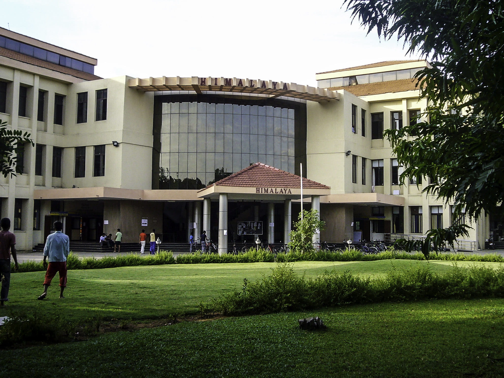
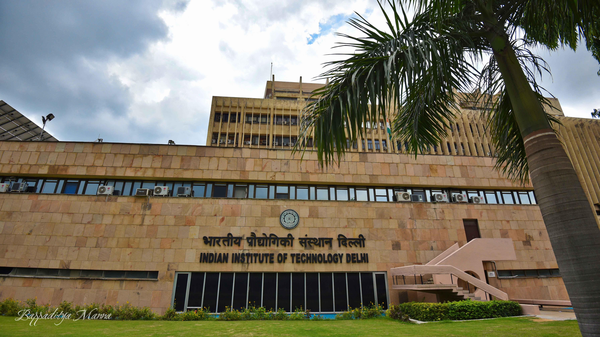

IIT Madras
-
The Indian Institute of Technology Madras (IIT Madras), established in 1959, is a premier public technical and research university located in Chennai, Tamil Nadu, India. It operates as a residential institute with approximately 550 faculty members, 8,000 students, and 1,250 administrative and supporting staff, all within a self-contained campus spanning about 250 hectares
- Academic Programs:
IIT Madras offers a diverse range of undergraduate, postgraduate, and doctoral programs across 18 disciplines in Engineering, Science, Humanities, and Management. Notably, it has introduced innovative programs such as a fully online Bachelor of Science (BS) degree in Data Science and Applications, designed to create proficient programmers skilled in application development, data sciences, and machine learning. Additionally, the institute has launched a BS degree in Electronic Systems to meet the growing demand for skilled graduates in the electronics and embedded systems sector.
-
Recent Developments:
International Expansion: IIT Madras established a new campus in Zanzibar, Tanzania, in July 2023, becoming the first IIT to set up an international campus. This initiative aims to provide quality education in Africa, offering programs like BS and MTech degrees in Data Science and Artificial Intelligence.
Research Collaborations: On March 17, 2025, IIT Madras, in collaboration with the Indian Space Research Organisation (ISRO), launched the S Ramakrishnan Centre of Excellence for Research in Fluid and Thermal Sciences. This facility aims to advance research in critical areas of aerospace engineering.
Innovative Projects: IIT Madras and Indian Railways unveiled India's first hyperloop test track, aiming to revolutionize travel by significantly reducing travel times between major cities. This technology has the potential to cut travel time between Bengaluru and Chennai to just 30 minutes.
-
For more detailed and updated information, you can visit the official IIT Madras website.
IIT Delhi
-
The Indian Institute of Technology Delhi (IIT Delhi), established in 1961, is a premier public technical and research university located in Hauz Khas, New Delhi, India. The campus spans 320 acres and is situated approximately 10 kilometers from Indira Gandhi International Airport.
- Academic Programs:
IIT Delhi offers a diverse range of undergraduate, postgraduate, and doctoral programs across various disciplines in Engineering, Science, Humanities, and Management. In 2024, the institute introduced several new programs, including a BTech in Design and Innovation, focusing on creativity and interdisciplinary approaches to engineering and design challenges.
-
Recent Developments:
Research Collaborations: In February 2025, IIT Delhi partnered with Ericsson to drive fintech innovation through research collaboration.
Industry Partnerships: In March 2025, IIT Delhi strengthened research ties with LG Electronics to advance research and innovation.
Entrepreneurship Initiatives: The Business and Entrepreneurship Conclave (BECon), organized by the Entrepreneurship Development Cell at IIT Delhi, has solidified its reputation as India’s premier E-Summit, bringing together entrepreneurs, investors, and thought leaders to catalyze innovation and impactful collaborations.
-
For more detailed and updated information, you can visit the official IIT Delhi website.
